|
|
HELP FIND THE FOLLOWING LOCATIONS
PAGE 60
THE SAINT: The
Crooked Ring
(Leslie Norman: February: 1965)
Unknown 1 - Dave Sniders
goes to see ‘Doc’ Spangler to extorrt
500 pounds.
After finding Saunders dead templar drives his Volvo around to question
Spangler.
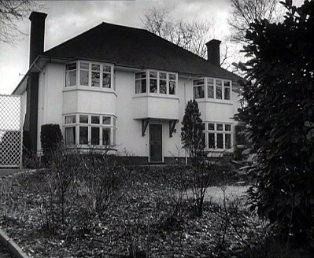 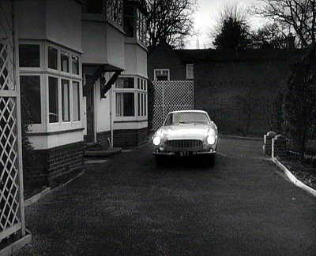
THE
SAINT:
The
Fellow Traveller
(Peter Yates: January 1963)
Unknown 1 – Simon drives his Volvo to the Matsons’
house to talk to Mrs Maston
about her
husband’s death.
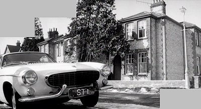
N61: Hollywood Court, Deacons Hill Road, Elstree – Simon drives Magda Vamoff home after their evening together at the Blue Goose
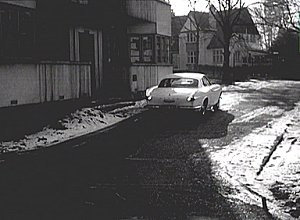
THE
SAINT:
The
Latin Touch
(John Gilling:
June 1962)
Unknown 1 – Simon Templar accompanies Hudson Inverest
to his meeting with the
kidnappers of Inverest’s
daughter Sue. They leave the main road and follow a dirt road to the
appointed
meeting place.
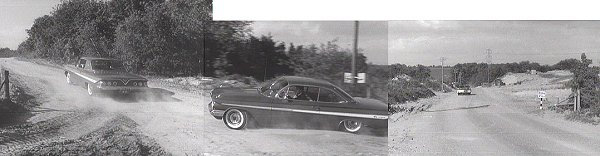
Unknown 2 - Simon Templar watches from the car as Hudson Inverest (Alexander Knox) confronts Tony Unciello (Bill Nagy), the kidnapper of Inverest’s daughter. As they leave the meeting the taxi driver, Marco, follows Unciello.
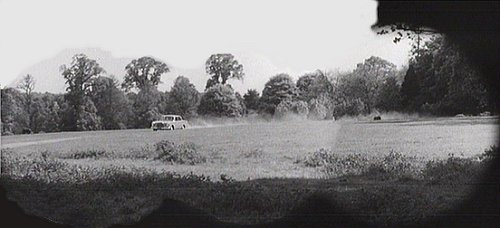 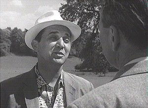
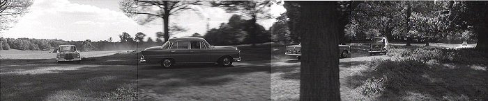
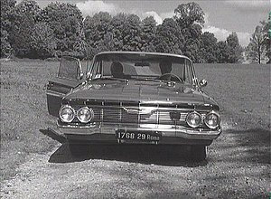 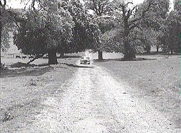 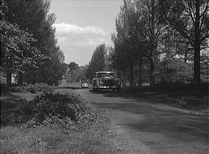
Think you know a spot? Need a bigger image? Email me.
< Previous | Index | Avengerland | Next >
Copyright © 2021 Anthony R. McKay